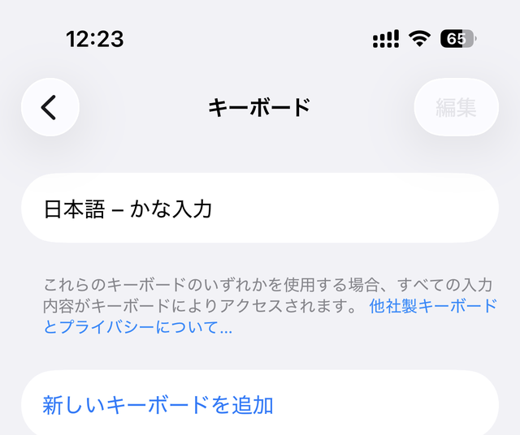
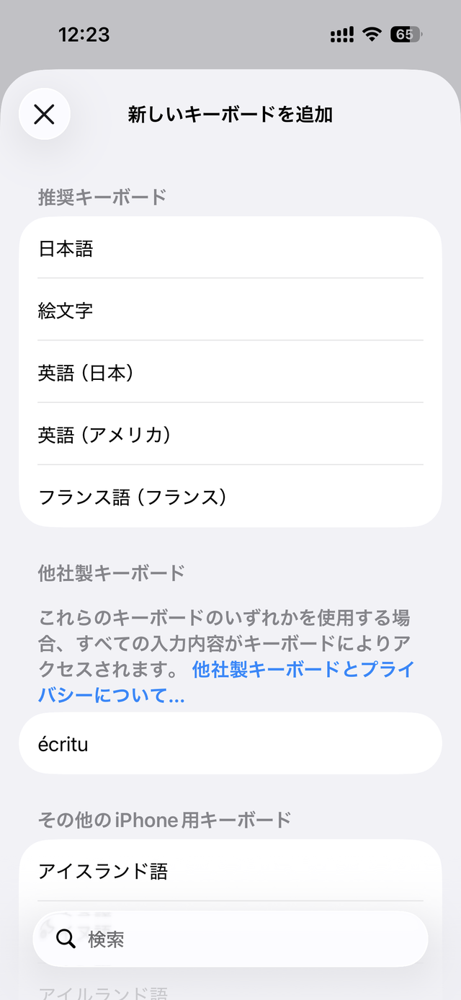
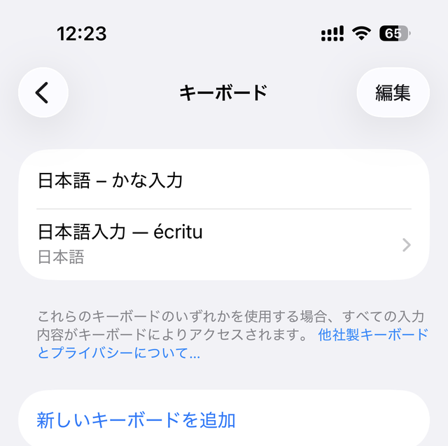
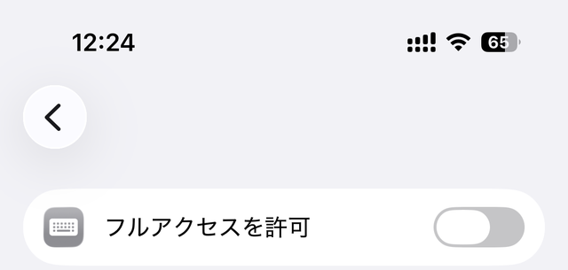
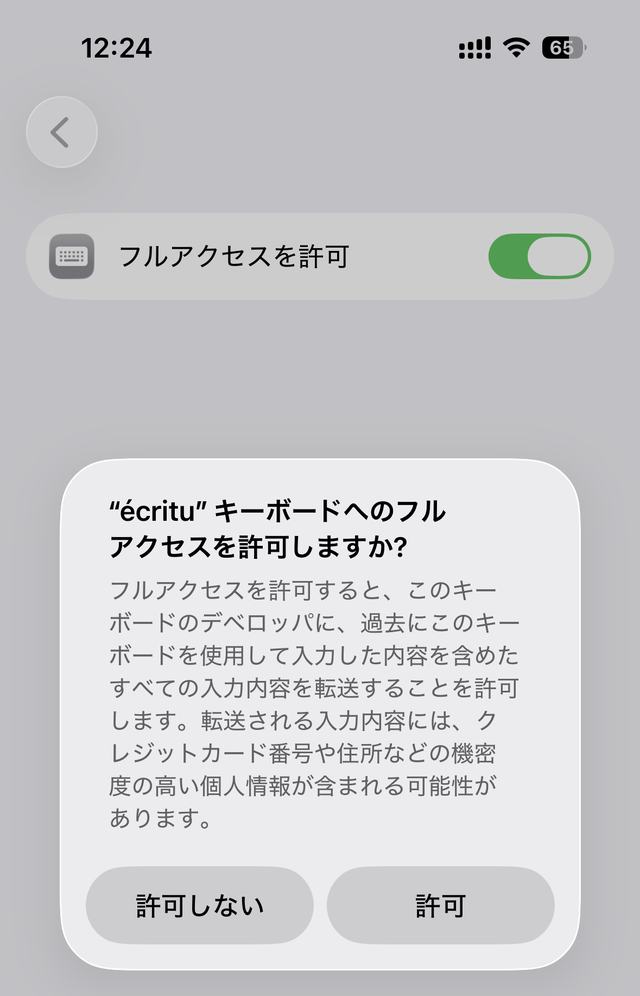
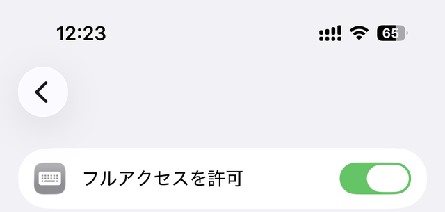
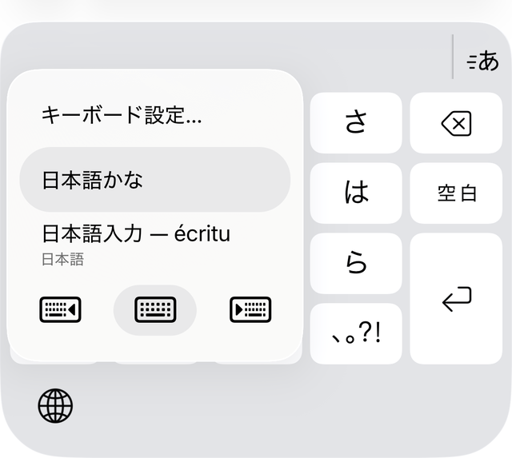

第2章導入 — キーボードの有効化
écritu のアプリが iPhone に入ったら、iOS にキーボードとして登録します。作業は iOS の設定アプリで 2〜3 分。あわせて「フルアクセス」の意味と、キーボードの切り替え方を説明します。
キーボードを追加する
iOS では、他社製キーボードは追加しただけでは使えず、設定アプリでの登録が必要です。次の手順で écritu を登録してください。
- ホーム画面で「設定」を開きます。
- 一般 › キーボード › キーボード と進みます。
- 「新しいキーボードを追加...」をタップします。
- 「他社製キーボード」の一覧にある écritu をタップして追加します。
- キーボード一覧に追加された écritu をもう一度タップします。
- 「フルアクセスを許可」を ON にします(確認ダイアログで「許可」)。






フルアクセスを許可するとできること
「フルアクセス」は、キーボードが本体アプリとデータをやり取りするための iOS の許可です。écritu では次の 2 つに使います。
- 変換辞書の共有 — écritu のアプリ側で管理する辞書データを、App Group(同じ開発元のアプリとキーボード拡張がデータを共有できる iOS の仕組み)を通じてキーボードから読み書きします。
- 学習語彙・学習スコアの保存 — あなたが確定した候補から自動登録される「学習語彙」と、候補の並び順を良くしていく学習スコアを保存します。
- 学習語彙・学習スコアの保存 — 入力するたびに学習がリセットされた状態になり、候補の並びが賢くなっていきません。
- 追加語彙・抑制語彙の反映 — アプリで登録した語彙がキーボードの変換に届きません。
- 設定を変えた結果の保存 — アプリ側で設定を変えること自体はできますが、キーボードが使う値として保存されません。
見た目では気づけません。フルアクセスが OFF でも、キーボードは設定どおりのテーマや配列で表示されます。読み取りは通れて書き込みだけが静かに失敗するためです。学習が溜まらないことにも、しばらく使ってからでないと気づけません。
そこで écritu は、フルアクセスが許可されていないときにキー面全体に案内を表示します。
- 案内には設定アプリでの手順が書かれています。[このまま使う] を押せば閉じられ、通常のキーボードとして入力できます(変換は問題なく動きます)。
- キーボードを閉じて開き直すと、フルアクセスが OFF のままなら再び表示されます。
キーボードの切り替え方
登録が済んだら、メモなどどこかの入力欄をタップしてキーボードを表示し、iOS がキーボードの下(横画面では脇)に表示する地球儀ボタン 🌐 で écritu に切り替えます。タップするたびに次のキーボードへ順番に切り替わり、長押しするとキーボードの一覧から選べます。
écritu のキーボード面の中には地球儀キーはありません。最近の iPhone では iOS 自身が地球儀ボタンをキーボードの外側に表示するため、écritu はその分をかなキーの広さに使っています。

連絡先を変換候補に使う場合
écritu には、iOS の連絡先に登録された姓・名・会社名を変換候補として表示する機能があります(任意)。使う場合は écritu のアプリで機能を有効にしたうえで、iOS が表示する連絡先へのアクセス許可のダイアログで「許可」を選んでください。設定項目の詳細は第7章で説明します。
これで準備は完了です。次章では、フリック入力から変換・確定までの基本操作を説明します。